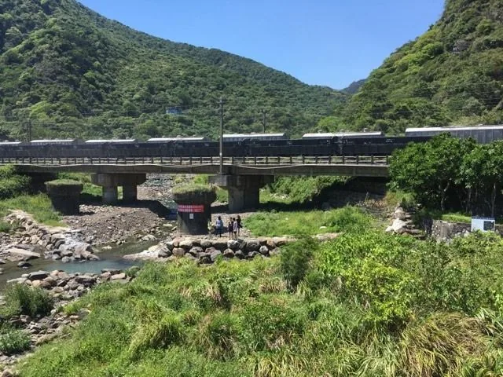
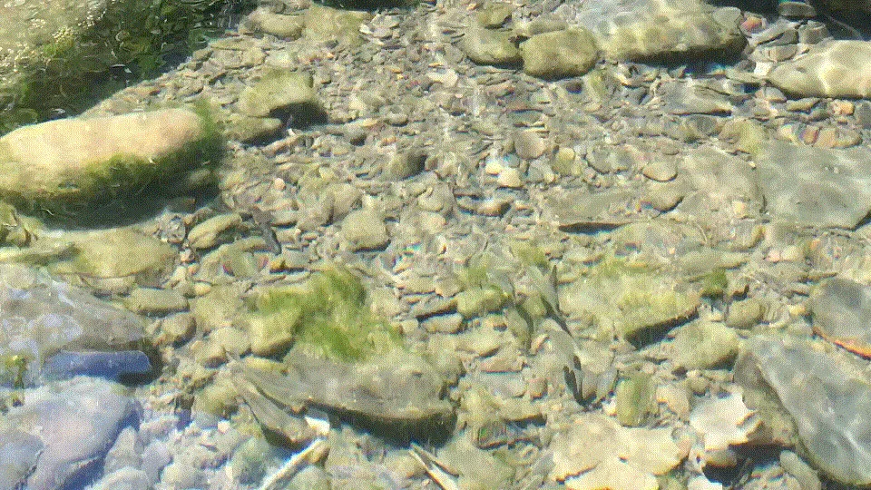
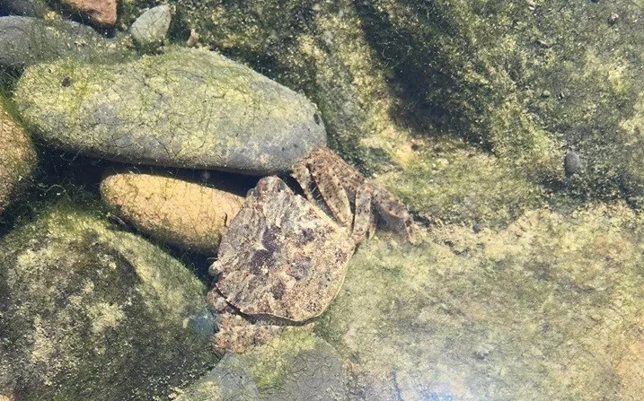
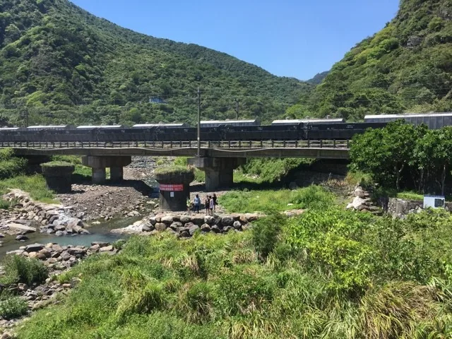

活動記事｜希望再見––溪流悠遠自由的模樣

「我已經掌握了這條河流的語言，理解鑲嵌在其中的每個細節，就如同對字母表上的每個字那般熟悉。我得到許多可貴的收穫，卻也失去了某些畢生再也無法重獲的東西—這條大河的悠雅、美麗及詩意，都已從我眼中消逝。」—《密西西比河上的生活》
「我沒見過你，但知道所有關於你的事情。」
9月初訪大溪川，本來只是久未下溪的興奮之情而已，並不曉得包含這種久仰大名的心情、難以言喻的熟悉。曾經的工作內容接觸或經手不少他的資料，現場看到輸出品更有「哇！原來被用在這裡啊！」的感覺。
每次都備齊裝備，但總沒能戴上面鏡下潛（難得有機會拿水下相機，我還是十分沒路用…），繼續熟門熟路地透著窺箱的壓克力面，窺看貼地匍匐的蝦虎、石縫裡的蝦蟹，或是在不起風的時刻，以肉眼穿過清澈的溪水看見魚群。外海的浪強勁地拍打，更襯得河口迷人，可以在這裡待上很久很久。


雖然原本阻隔生物迴游的第一道固床工在一個多月前敲開（連結），但今年的宜蘭不受雨神青睞，上溯的一小段路只見絲狀藻（水綿？）佔據水面，人都不想下去的環境，更不曉得生物如何在裏頭生存。在溪裡活動的時間並不長，雖然不夠繼續往上，但也知道還有數道壩體在上頭等著……去過更原始的溪谷，就會可惜這樣的環境那是遠遠不及。
雖然感覺可惜，但對大溪川而言這是個過渡期，這已是往好的方向前進的過渡期。失去的東西不會恢復如前，但還有機會縫縫補補回到最接近的模樣。
從舊公路往溪谷望去，懸在上頭的鐵路每十分鐘就有火車轟隆而過，對比作為背景的溪與山，每一次，我們都想清楚了拿什麼交換什麼嗎？

留言
電子郵件不會公開，只用來辨識留言者。第一次留言會先經過審核，之後同一個電子郵件的留言會直接顯示。本留言區以 Cloudflare Turnstile 防止垃圾留言。